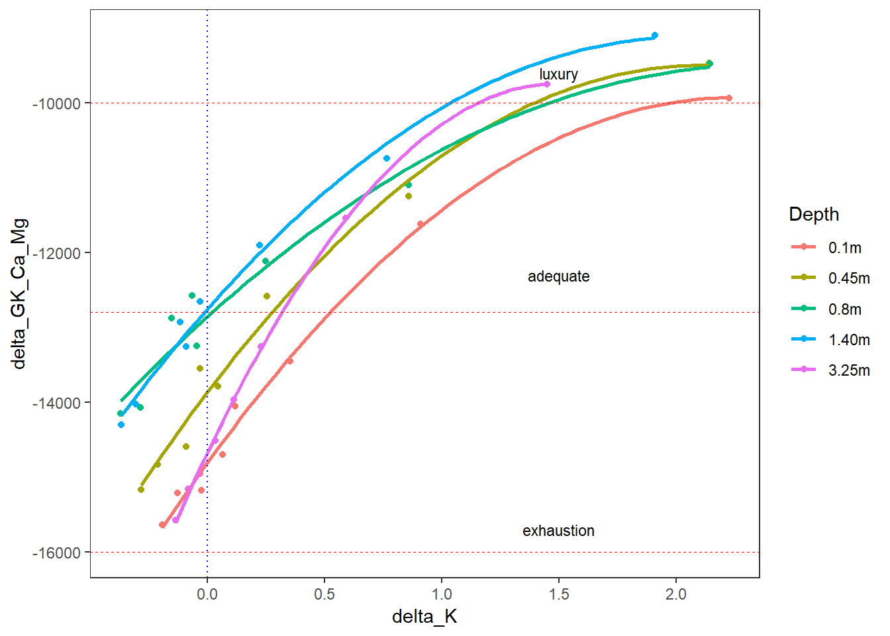

Agriculture and Food
My name is Seija Tuomi and I work in Ag&F soil chemistry and spectroscopy. Before Data School I made a few attempts at coding R for Infrared Spectroscopy but I have no other experience in coding. Before Data School I spent a lot of time entering data into Excel sheets and analysing the data. What I really needed is a programmable language to streamline all the work systematically.
I am looking at the thermodynamics of potassium exchange equilibria in acid sulfate soils in the South Alligator River in Kakadu National Park, and relate the thermodynamics to the soil pedogenesis. In other words, the ability of the soil to supply potassium to plants, which is characterised by both the total amount of nutrient present and the energy level at which it is supplied. This is measured with adsorption isotherms. The data required includes cation analyses, ionic strength, activity coefficients and Gibb’s Free energy. The goal is to compare the isotherms of different areas of the riperia zone. The coding work included a script for reading in data, scripts for a calculator of thermodynamic terms fitting a quadratic model to data, and visualisation of isotherms.
ggplot2 is my favourite tool to use. It is a very powerful way of representing data and this is something I use almost daily now.
Most of my time went into wrangling data into usable form, transforming pdf to csv files, making a thermodynamic calculator, finding the correct tools to analyse it and evaluating these tools to see if they work with our version of RStudio. Analytical data comes in many format, each requiring its own script for reading in. My required data came from the UNSW library, as set on acid sulfate soils. What I didn't know is that it comes as a CD-ROM with restrictions and the file is a 156 page PDF. Fortunately a colleague knows the author and I was able to call her to get the restriction removed.
Because isotherms are non-linear I would like to learn non-linear modelling and statistics to build my own package for analysing isotherms, for routine use by those with minimal knowledge of soil chemistry. The only input required is exchangeable cation analysis data. Isotherms are a very powerful tool in agricultural science and the information they convey is vital to many applications where the knowledge of nutrient levels is required to make an informed decision. Our group is building a digital library based on similar soil properties and isotherms make a great addition to this suite. One of the reasons for coming to Data School was to learn the skills to build these chemistry modules and contribute to the library. Also, my group is starting to build a library for multivariate calibrations and calculations for soil attributes for FT-MIR work to be routinely used for soil survey work. With the programming skills from data school I can now contribute to this library as well.
| Depth | delta_GK_Ca | delta_K | delta_GK_Ca_Mg |
|---|---|---|---|
| 0.1m | -14339.5 | -0.025 | -15173.5 |
| 0.1m | -13818.5 | 0.065 | -14692.5 |
| 0.1m | -12559.5 | 0.355 | -13448.0 |
| 0.1m | -10730.0 | 0.910 | -11621.5 |
| 0.1m | -9040.5 | 2.225 | -9937.0 |
Single isotherms at different depths
Isotherms at South Alligator River in Kakadu National Park 
The most enjoyable part of Data School for me was learning RStudio, visualisation and statistics properly with teachers whose style suited me well. These skills are what I will be using most in the future. After the Research Data Management session I invited the librarians to come and give a one hour talk in the Butler Bld on the DAP, orcid numbers and how to publish data, scripts and papers in the DAP, and why it is imortant. The librarians also told us about services they can provide that we had never thought of. As result our group leader will reject any papers where staff have not entered data into the DAP. In the future all new projects will be required to have a data management plan in place at the beginning of the project on the recommendation of Data School cohorts two and three. My team will have one data custodian per project. A digital library of data wrangling is planned for instrument data. Spectroscopy team will develop new analytical methods for FTIR work using HPC, Python and R. I have used RStudio to wrangle data for my Synthesis Project although it took much longer than in Excel. Cohort three (my cohort) will give a talk on our data school experience in our Building after data school finishes.